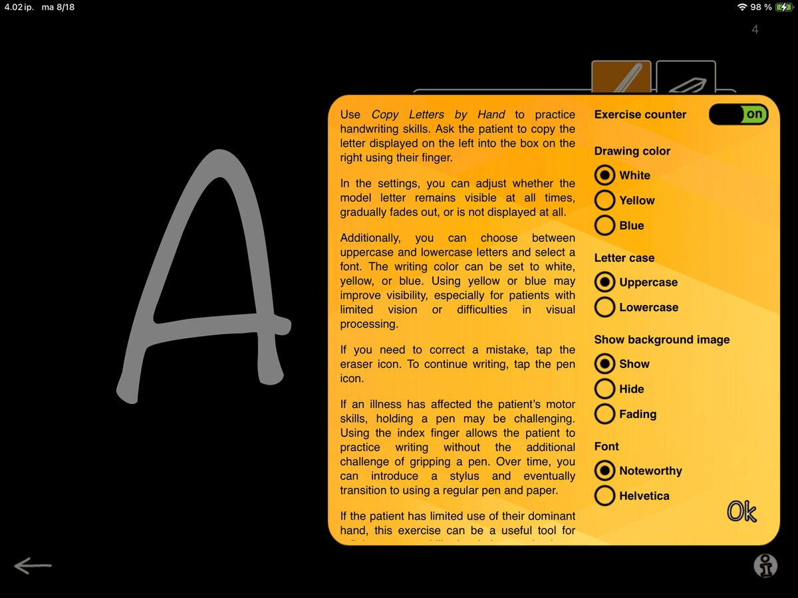
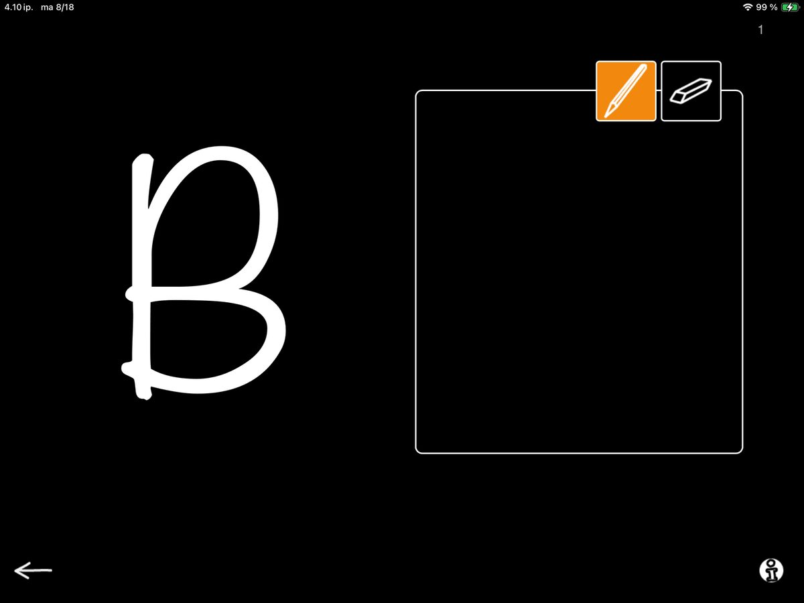
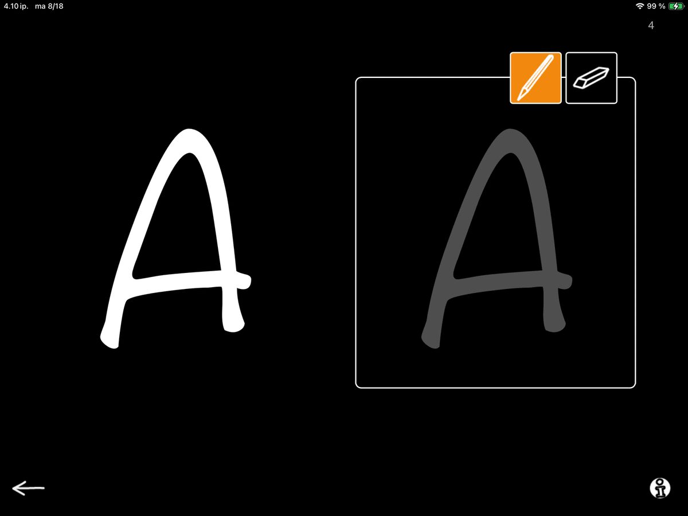

Head over to the App Store to explore new content and enjoy an improved user experience in exercises:
Copy Letters by Hand
Copy Words by Hand
Copy Words Using the Keyboard
Fill in Letters by Hand
Fill in the Blank
Write a Sentence
Synopsis
We’re sharing a series of short spotlights on each exercise in this category over the coming weeks, practical tips and clinical applications included. Let’s go!

Spotlight on Copy Letters by Hand
To kick things off, let’s take a closer look at Copy Letters by Hand. In this exercise, the patient uses either their finger or a stylus pen to copy a letter displayed on the screen into a box shown next to it.
The settings allow for multiple adjustments. 👉

For this task, a key option is Show background image. When you select Show the white box contains a dark gray outline of the target letter for tracing (see image with letter A). When you select Hide, the box stays completely empty, inviting the patient to complete the letter independently (see image with letter B).
When you choose Fading, (see video with letter N) the outline is gradually faded with each task, helping the patient build confidence and progress toward independent writing.

This exercise is a gentle way to work up to using pen and paper when a familiar task has become a new skill to learn.
It’s especially helpful for patients who need to strengthen motor skills in their dominant hand or adapt to using their non-dominant hand after a stroke.
NB. An occupational therapist can be a valuable partner in developing motor skills needed for writing, and many skills practiced in occupational therapy can also be reinforced in speech therapy. Collaboration is key!
This exercise also benefits patients with cognitive challenges, offering a clear, simple way to practice goal-directed work and cooperation. You can also add an element of interaction by taking turns to complete the tasks. Since SanapsisPro does not provide automatic feedback, the goals and success criteria can be set individually to suit every patient.
Thank you stopping by my blog and stay tuned! We will soon walk you through the next updated exercise in SanapsisPro Writing category.